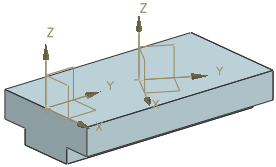

创建定义特征位置的偏置基准 CSYS
您需要创建另一个贯通部件中心的拉伸特征，并旋转30度。
-
在特征工具条上的基准/点下拉菜单中，选择基准 CSYS
 。
。 -
在类型组的列表中选择偏置 CSYS。
-
在参考列表中选择选定的 CSYS。
-
在图形窗口中选择现有的基准 CSYS。
-
在 CSYS 偏置组中，键入下列值：
-
X = 0
-
Y = 60
-
Z = 0
-
角度 X = 0
-
角度 Y = 0
-
角度 Z = -30
-
-
单击鼠标中键。
